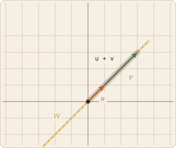
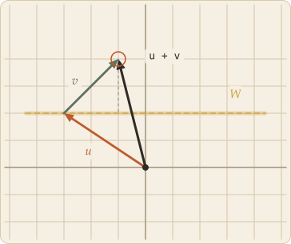

Everything so far has been about arrows on a grid. None of it needed to be. The arguments only ever used two operations and a handful of rules those operations obey, so anything else satisfying the same rules inherits the same results. Writing down exactly what those rules are is what turns a picture into a definition.
Skip to the board ↓Stop asking what a vector is and start asking what it has to do. A vector space is not a kind of object; it is a set together with two operations that behave in a specified way. The elements are then called vectors by definition — not because they look like arrows.
A vector space consists of a set V, whose elements are called vectors, and a field F, whose elements are called scalars, equipped with two operations:
Those two arrows are doing real work. Writing "+ : V × V → V" says that adding two vectors produces something still in V, and likewise that scaling a vector keeps you inside V. That property is called closure, and it is the first thing to fail when a set turns out not to be a vector space.
The field F is almost always the real numbers here. It can be the complex numbers, the rationals, or a finite field instead, and the choice matters: the same set of objects over a different field is a different vector space.
For all u, v, w in V and all a, b in F:
How addition behaves
How scaling behaves
That is the complete list. Together with closure it is everything a vector space is required to be, and every theorem in linear algebra is built from it and nothing else.
Two things worth noticing. The first four axioms say precisely that V under addition is an abelian group — the rest is about how the scalars interact with it. And a number of familiar facts are deliberately absent: nothing here mentions length, angle, distance, or perpendicularity. Those arrive only when you add a dot product on top, which is extra structure, not part of the definition.
Some facts that look like axioms are not, because they follow from the ones above: the zero vector is unique, each inverse is unique, 0v = 0, a0 = 0, and (−1)v = −v. Short derivations, all of them, and a good sign the list is not padded.
The payoff for the abstraction is how much it catches. All of these are vector spaces over the reals, and every result proved from the eight axioms applies to all of them at once:
Functions are the case worth dwelling on. Add two functions and you get a function; scale one and you get a function; the zero function plays the role of 0; and all eight axioms check out pointwise. So a space of functions is a vector space in exactly the sense the definition intends, and talk of a "basis of functions" or "the dimension of a function space" is not a metaphor.
Non-examples are just as instructive. Vectors in the plane with strictly positive entries are not a vector space: scaling by −1 leaves the set, and there is no zero. Neither are the invertible 2×2 matrices — adding two of them can easily produce a singular one, so closure fails.
A subspace of V is a subset W ⊆ V that is itself a vector space, using the same two operations it inherits from V. A space living inside a space.
Checking that against the full definition would mean verifying eight axioms all over again. You never have to. Associativity, commutativity and the distributive laws are statements that hold for all elements of V, so they automatically hold for any elements you select out of it. Those axioms are inherited for free. The only way a subset can fail is by leaking — by containing elements whose sum or whose multiples fall outside it. Which leaves three things to check:
Additive inverses come along for the ride: if v ∈ W then (−1)v = −v is in W by the third condition. And the first condition can be weakened to "W is not empty", since scaling any member by 0 produces 0. It is usually stated as 0 ∈ W because that is the fastest thing to check and the most common way a candidate fails.

a line through the origin

a line that misses it
That is why "through the origin" appears in every description of a subspace. Shift a line off the origin and it stops being closed under addition at the same moment it stops containing 0. Such a set is still perfectly useful — it is called an affine subspace, and it is what the solution set of an inhomogeneous system looks like — but it is not a vector space.
In ℝ² there are exactly three kinds of subspace, and no others: the single point {0}, any line through the origin, and ℝ² itself. In ℝ³ you also get planes through the origin. In every case the dimension of the subspace is 0, 1, 2, and so on up to the dimension of the whole space.
These are exactly the spans of sets of vectors. Take any collection of vectors and the set of all their linear combinations is automatically a subspace — it contains 0 (take every coefficient zero), sums of combinations are combinations, and scaled combinations are combinations. Going the other way, every subspace is the span of some set of vectors. Span and subspace describe the same objects, built up from generators or carved out by conditions.
The board below builds spans directly. Place up to three vectors and watch which subspace they generate.
Click anywhere to place a vector.
The tinted region is the span — every vector you could reach by scaling the ones you placed and adding the results. With nothing placed, or with everything sitting at the origin, the only reachable point is the origin itself, and the span is the zero subspace. One vector, or several pointing along a common line, reaches that whole line and nothing else. Two vectors in genuinely different directions reach the entire plane.
The moment to watch for is the collapse. Set up two vectors that span the plane, then drag one until it lines up with the other: the tint drops from the full plane to a single line, and the dimension falls from 2 to 1. Nothing about either vector changed except its direction, and yet the set of reachable points went from infinite in two directions to infinite in only one. This is linear dependence, and it is the same collapse a zero determinant produces — there, the image of the whole plane is a line, and that line is a subspace generated by the columns of the matrix.
Notice also what you cannot make the board do. There is no way to arrange vectors so the span is a line that misses the origin, or a disc, or a half-plane. The span of any set is always a subspace, because it is built out of exactly the operations a subspace has to be closed under.